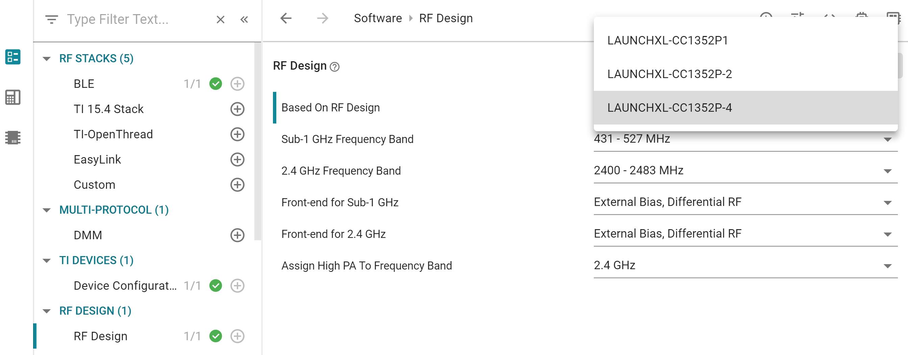

BLE5-Stack 2.01.01 (SDK 3.40) to BLE5-Stack 2.01.02 (SDK 4.10)¶
This section will describe a way to migrate a project from BLE5-Stack 2.01.01 to a BLE5-Stack 2.01.02 project.
The best way to migrate is to open a new project from the new SDK and transfer your changes and application code over to the new example.
Porting Simple Peripheral¶
For this migration guide, Simple Peripheral from BLE5-Stack 2.01.01 will be ported over to BLE5-Stack 2.01.02. The recommended approach is to start with a BLE5-Stack 2.01.02 project that contains the same base functionality as the porting target project and merge in any custom functionality.
Choose a BLE5-Stack 2.01.02 example project that contains your target project’s base functionality.
Transfer all modified application files from BLE5-Stack 2.01.01 into the BLE5-Stack 2.01.02 example project.
In this example, the following files from BLE5-Stack 2.01.01 were moved into Simple Peripheral BLE5-Stack 2.01.02 example:
simple_peripheral.csimple_peripheral.h
Add the pointer
&pRandomAddressas argument in the last parameter in GAP_DeviceInit call. This is needed to correctly set a random static address if configured.GAP_DeviceInit(GAP_PROFILE_PERIPHERAL, selfEntity, addrMode, &pRandomAddress);
Add the following code section in
simple_peripheral.cat the end of SimplePeripheral_processGapMessage before thedefault:case:Listing 228. Added section to handle HCI Events for rejection of peer device Connection parameter update request.¶1 #if defined ( NOTIFY_PARAM_UPDATE_RJCT ) 2 case GAP_LINK_PARAM_UPDATE_REJECT_EVENT: 3 { 4 linkDBInfo_t linkInfo; 5 gapLinkUpdateEvent_t *pPkt = (gapLinkUpdateEvent_t *)pMsg; 6 7 // Get the address from the connection handle 8 linkDB_GetInfo(pPkt->connectionHandle, &linkInfo); 9 10 // Display the address of the connection update failure 11 Display_printf(dispHandle, SP_ROW_STATUS_2, 0, 12 "Peer Device's Update Request Rejected 0x%x: %s", pPkt->opcode, 13 Util_convertBdAddr2Str(linkInfo.addr)); 14 15 break; 16 } 17 #endif
Modify
main.cin the BLE5-Stack 2.01.02 example if additional tasks were added in the BLE5-Stack 2.01.01 project.Move any profiles and services that the application is using to the BLE5-Stack 2.01.02 project.
Transfer the Sysconfig settings either visually through the GUI or open both the old and the new project .syscfg files and copy-paste the desired settings.
If necessary, update the project to use the newer TI-RTOS drivers that are supplied with the SimpleLink CC13xx/CC26xx SDK.
Refer to the Core SDK release notes for additional information and the TI-RTOS examples included with SimpleLink CC13xx/CC26xx SDK.
For additional information on how BLE5-Stack 2.01.02 uses TI-RTOS see TI-RTOS7 (RTOS Kernel) Overview.
For any utilized TI Drivers, review TI-RTOS Kernel (SYS/BIOS) User’s Guide and TI Drivers API Reference.
RTLS Examples¶
Please refer to the RTLS Toolbox chapter for up-to-date status and information about the RTLS offering. In this section a few application code related changes are listed for your information, but there are more code changes than listed.
Time-of-Flight (TOF) removed from RTLS Toolbox.
Extensive code changes to RTLSCtrl which also includes removal of ToF functionality. Please manually compare files from old and new SDK for more details.
Host Test Example:
Added handling for channel map changes (
HCI_BLE_CHANNEL_MAP_UPDATE_EVENT).Added compilation options for Constant Tone Extension (
RTLS_CTE_TEST).
RTLS API
rtls_ctrl_api.hchangesRTLSCtrl_sendDebugEventrenamed toRTLSCtrl_sendDebugEvt.RTLSCtrl_processDataSentrenamed toRTLSCtrl_dataSentEvt.RTLSCtrl_processRtlsPacketrenamed toRTLSCtrl_rtlsPacketEvt.RTLSCtrl_syncEventNotifyrenamed toRTLSCtrl_syncNotifyEvt.
Updates to rtls_master.c
Added handling for
RM_EVT_CONN_EVTthat will call new functionRTLSMaster_processConnEvt().Functionality from
RTLSMaster_connEvtCBis moved toRTLSMaster_processConnEvt.Added handling for
HCI_BLE_CHANNEL_MAP_UPDATE_EVENT.Updated handling for
GAP_LINK_PARAM_UPDATE_EVENT.Testing of dynamic change of the channel map added (
RTLS_TEST_CHAN_MAP_DYNAMIC_CHANGE).DEFAULT_MAX_SCAN_RESchanged from 8 to 16.
Updates to rtls_slave
Minor changes to
RTLSPassive_cmStartReq.AssertHandler added to ubStack_taskFxn.
Small code updates in
micro_ble_cm.candmicro_ble_cm.h
Updates to rtls_passive
Only changes related to RTLS API name changes.
Changes in AoA Driver:
AOA_NUM_ANTENNASredefined toBOOSTXL_AOA_NUM_ANT.RF_PriorityCoexDefaultadded toAOA_rfEnableRam.Define
AOA_NUM_ANTENNASchanged toBOOSTXL_AOA_NUM_ANT.The
AoA_IQSample_tstruct split into two structs.AoA_IQSample_Ext_tandAoA_IQSample_t. This affect code and functions that use it (ex.AOA_getPairAngles).Changes in
AOA_getPairAnglesparameter.Changes in
AOA_postProcessparameter.Minor updates in
AOA_getRfIqSamples.
Specific guidelines when using SysConfig and CC1352P¶
In SysConfig, when using CC1352P, the correct RF front end must be selected to meet the design’s needs. In the RF Design and RF Stack modules, select the correct option for “Based On RF Design” inside the RF Design and the stack modules of SysConfig (only the stack modules used by the project needs attention).
Figure 286. Select the correct option for “Based On RF Design” inside the RF Design and the stack modules of SysConfig [here an example for the RF Design module]¶